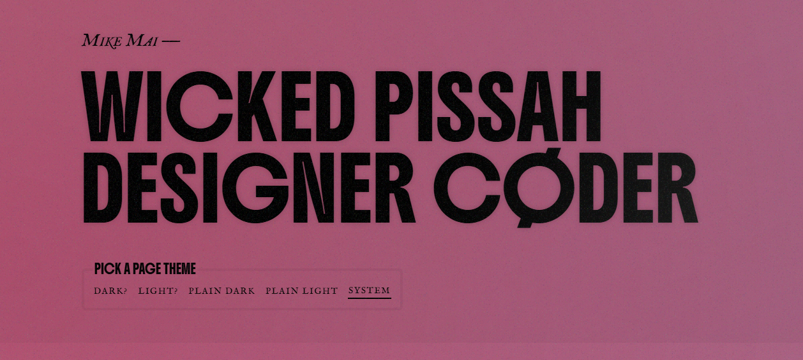

Craft Atlas · 06
Styling & CSS Architecture
Great-looking sites are not built from clever one-off CSS. They are built from a small, ruthlessly consistent token system, then re-skinned with a single variable. Across 80 teardowns the same skeleton recurs: design tokens at the root, fluid clamp() everywhere, and modern selectors (:has(), container queries, subgrid) doing the work JavaScript used to.
The one move: Define every color, space, radius, and type step as a CSS custom property on :root, then compose everything from those tokens. Vercel ↗ ships an entire site from the Geist token system; Stripe ↗ drives its variable font and fluid scale the same way. When a token is the single source of truth, a redesign is a find-and-replace, not a rewrite.
1 · Design tokens: one source of truth
A design token is a named value — --accent, --space-4, --radius-card — that every component reads instead of hardcoding. The elite sites never write #f5a623 twice. Vercel ↗ maps size/line-height/tracking/weight into Geist typography classes so a heading is one class, not five declarations. Pitch ↗ (built on Framer) themes its entire body background from a single design token (var(--token-9f3d2b7e…)). Sara Soueidan ↗ hand-authors custom properties keyed to a data-theme attribute for an enhanced tier.
The professional pattern is a three-layer token system: primitive (raw values) → semantic (intent) → component (usage). Semantic tokens are what components reference, so you can re-point --surface from one primitive to another and the whole UI follows.
:root {
/* 1 — Primitive: raw, brand-agnostic values */
--amber-500: #f5a623;
--ink-900: #0b0c0e;
--ink-100: #e9eaec;
--space: 0.25rem; /* base unit */
/* 2 — Semantic: intent, not appearance */
--color-accent: var(--amber-500);
--color-bg: var(--ink-900);
--color-text: var(--ink-100);
--space-4: calc(var(--space) * 4); /* 1rem */
--radius-card: 12px;
/* 3 — Fluid type scale (one clamp per step) */
--step-0: clamp(1rem, 0.95rem + 0.22vw, 1.125rem);
--step-3: clamp(1.8rem, 1.45rem + 1.7vw, 3.05rem);
}
/* Components only ever read SEMANTIC tokens */
.card {
background: var(--color-bg);
color: var(--color-text);
border-radius: var(--radius-card);
padding: var(--space-4);
}Use color-mix() to derive states from one token instead of defining ten shades: border-color: color-mix(in srgb, var(--color-accent) 30%, transparent) gives you a tinted hairline that tracks the accent automatically. The live demos on this page use exactly this.
2 · Tailwind v4 vs raw CSS variables
This is the real decision for a new project. Both are token systems — Tailwind is a token system with a utility-class compiler and a design-constraint guardrail. In our teardowns Tailwind dominates the product/SaaS tier: Linear ↗, Vercel ↗, Ramp ↗, and Manu Arora ↗ all ship utility CSS. The bespoke-craft tier (Mike Hall ↗, Sara Soueidan ↗) hand-authors CSS with custom properties and cascade layers.
Tailwind v4 changed the calculus: the config is now CSS-native. You declare tokens in a @theme block and they become both utility classes and real CSS custom properties you can read anywhere — so the old "Tailwind vs CSS variables" framing is mostly dead. You get both.
/* Tailwind v4 — tokens live in CSS, no JS config file */
@import "tailwindcss";
@theme {
--color-accent: #f5a623;
--font-display: "Newsreader", serif;
--radius-card: 12px;
--spacing: 0.25rem; /* drives p-4, gap-6, etc. */
}
/* These tokens are now BOTH:
- utilities: class="bg-accent rounded-card font-display"
- properties: var(--color-accent) anywhere in your CSS */| Dimension | Tailwind v4 (utilities) | Raw CSS variables |
|---|---|---|
| Constraint | Strong — you can only pick from the scale | None — discipline is on you |
| Co-location | Styles sit in markup; fast to read in one place | Separate stylesheet; cleaner markup |
| Dynamic theming | Via the same CSS vars under the hood | Native; flip one property at runtime |
| Bundle | Tiny — unused utilities purged at build | Whatever you write; easy to bloat |
| Best for | Teams, product UI, fast iteration | Editorial / craft sites, total control |
Pitfall — the utility soup: 14 utility classes on one div is a smell. When a pattern repeats 3+ times, extract a component (@apply sparingly, or a real component in React/Vue). Tailwind without component extraction drifts into the same copy-paste rot raw CSS does.
3 · Fluid & responsive without breakpoints
The single biggest upgrade in modern CSS: stop writing breakpoint stacks and let one clamp() interpolate continuously. Stripe ↗ renders its H1 fluidly (~34px on a laptop, scaling up) with tight leading; Vercel ↗, Lusion ↗, and Family ↗ all lean on clamp() for type and spacing. The pattern: clamp(MIN, PREFERRED, MAX) where PREFERRED mixes a rem base with a vw slope.
/* Fluid type: never too small on mobile, never too big on 4K */
h1 { font-size: clamp(2.3rem, 1.7rem + 2.9vw, 4.4rem); }
.lede { font-size: clamp(1.18rem, 1.05rem + 0.65vw, 1.55rem); }
/* Fluid space: section padding scales with the viewport */
.section { padding-block: clamp(3rem, 4vw + 1rem, 6rem); }
/* Intrinsic responsive grid — auto-fit, no media queries at all */
.grid {
display: grid;
grid-template-columns: repeat(auto-fit, minmax(min(100%, 260px), 1fr));
gap: 1.5rem;
}The auto-fit / minmax / min() grid is the workhorse — cards reflow from 4 columns to 1 with zero media queries, and min(100%, 260px) stops a single card overflowing on a 320px phone. This page's card grids and shared.css use exactly this.
Resize the window — this heading scales continuously, not in steps.
Fluid by clamp()
Computed size: — · one declaration, infinite breakpoints.
4 · Modern CSS: :has(), container queries, subgrid
These three shipped to all evergreen browsers and quietly killed a lot of JavaScript.
:has() — the parent selector
Mike Hall ↗ builds an entire 5-mode theme switcher with zero JavaScript using radio inputs plus :has() sibling selectors — the page re-themes instantly, fully keyboard-accessible. :has() lets a parent style itself based on its children's state, so form-field validation, "card contains an image", and toggle UIs become pure CSS.
/* Re-theme the whole page from a checked radio — no JS (Mike Hall) */
body:has(#theme-dark:checked) { --color-bg: #0b0c0e; --color-text: #e9eaec; }
body:has(#theme-sepia:checked) { --color-bg: #f4ecd8; --color-text: #2b2417; }
/* A field reacts to the input inside it */
.field:has(input:focus) { border-color: var(--color-accent); }
.field:has(input:valid) { border-color: var(--color-ok); }No JS — the field border is driven entirely by :has(input:…)
focus → amber · invalid → orange · valid → teal
The parent .field styles itself from its child input's :focus / :valid / :invalid state. Zero script.
Container queries — components that size to their slot
Media queries ask "how big is the viewport?" Container queries ask "how big is my container?" — so a card in a wide sidebar and the same card in a narrow column style themselves correctly, regardless of screen size. This is the right tool for the bento grids in Ramp ↗, where one card template appears at many sizes.
.card-wrap { container-type: inline-size; } /* establish a query container */
/* style the CARD based on the WRAPPER's width, not the screen */
@container (min-width: 360px) {
.card { display: grid; grid-template-columns: 96px 1fr; gap: 1rem; }
}Subgrid — align nested grids to the parent's tracks
Card grids look polished only when every card's title, body, and footer line up across the row. grid-template-rows: subgrid lets a card inherit the parent grid's row tracks so all titles share a baseline even with uneven content.
.grid { display: grid; grid-template-columns: repeat(3, 1fr); gap: 1.5rem; }
.card {
display: grid;
grid-row: span 3;
grid-template-rows: subgrid; /* title / body / footer align across ALL cards */
}5 · Component styling & cascade layers
The recurring approach across crafted sites is to scope styles and control the cascade explicitly. Mike Hall ↗ authors with native @layer cascade layers plus logical properties (margin-inline, padding-block) and relative units. Ramp ↗ and Brittany Chiang ↗ use CSS Modules (hashed class names) for collision-free scoping. Josh Comeau ↗ uses Linaria — zero-runtime CSS-in-JS compiled to CSS Modules — specifically to drop the styled-components runtime and stay RSC-compatible.
Cascade layers end specificity wars. You declare an order once, and later layers always win regardless of selector strength — so your tokens, base, components, and utilities never fight.
/* Declare the cascade order ONCE — predictable forever after */
@layer reset, tokens, base, components, utilities;
@layer components {
.button { background: var(--color-accent); border-radius: var(--radius-card); }
}
@layer utilities {
/* a single-class utility always beats the component layer — no !important */
.mt-0 { margin-block-start: 0; }
}Logical properties (margin-inline, inset-block, padding-inline) make a layout RTL- and vertical-writing-ready for free. shared.css uses margin-inline: auto and padding-block throughout for exactly this reason — write once, work in every writing mode.
6 · Theming: dark mode & live re-skinning
Because every color is a token, theming is just re-pointing those tokens. Josh Comeau ↗ — who wrote the canonical "Perfect Dark Mode" — ships a flicker-free, persisted, token-driven toggle. Sara Soueidan ↗ swaps a data-theme attribute. Mike Hall ↗ does it with pure :has(). The mechanism is always the same: override semantic tokens, let the cascade repaint.
:root { --color-bg: #fff; --color-text: #111; }
[data-theme="dark"] { --color-bg: #0b0c0e; --color-text: #e9eaec; }
/* Respect the OS default, allow manual override */
@media (prefers-color-scheme: dark) {
:root:not([data-theme="light"]) { --color-bg: #0b0c0e; --color-text: #e9eaec; }
}
html { color-scheme: light dark; } /* themes native UI: scrollbars, form controls */Live token re-skin
Every property below is read from a CSS variable. Change the token, the component follows — no rebuild.
--color-accentOne element, four tokens. This is how Josh Comeau, Sara Soueidan and Mike Hall re-skin entire pages — flip the variables, the cascade repaints.

:has(), no JavaScript. The CSS is the design system: cascade layers, logical properties, near-zero JS budget.7 · CSS performance budget
CSS is render-blocking — it sits on the critical path to first paint. The fast sites keep it lean and animate cheaply.
- Animate only
transformandopacity. Stripe ↗ bakes this into its motion token system as a hard rule and isolates animated components to limit repaint. These two properties run on the compositor and skip layout / paint. - Kill layout shift from fonts. Ramp ↗ uses
next/font localwith a metric-matched fallback so its paid typeface swaps in with zero CLS. Pair withfont-display: swap. - Use
content-visibility: autoon long off-screen sections to skip rendering work until they scroll near the viewport — near-free virtualization. - Reach for
will-changeonly just before an animation and remove it after; leaving it on permanently wastes GPU memory. - Purge unused CSS. Tailwind does this automatically; hand-authored CSS needs discipline. Mike Hall ↗ ships two stylesheets total and only an analytics beacon for JS — instant load.
/* Skip rendering off-screen blocks until needed */
.section {
content-visibility: auto;
contain-intrinsic-size: auto 600px; /* reserve height to avoid scroll jumps */
}
/* GPU-friendly hover — transform/opacity only, no width/top/box-shadow thrash */
.card { transition: transform .2s var(--ease), opacity .2s var(--ease); }
.card:hover { transform: translateY(-2px); }Pitfall — animating layout properties: transitioning width, height, top, or margin forces layout + paint on every frame and janks on mobile. Animate transform: scale() / translate() instead. backdrop-filter: blur() (the glass nav in Nothing ↗ and our own header) is expensive — use it on small, static surfaces, never on scrolling content.
8 · The styling checklist
Tokens first
Every color, space, radius, and type step is a custom property on :root. No hardcoded hex twice. Semantic tokens, not raw values, in components.
Fluid by default
Type and section spacing use one clamp(), not breakpoint stacks. Grids use auto-fit + minmax + min() — reflow without media queries.
Modern selectors
:has() for parent-aware styling, container queries for component-level responsiveness, subgrid for cross-card alignment. Delete the JS they replace.
Control the cascade
Declare @layer order once. Scope components (CSS Modules / zero-runtime). Logical properties for free RTL.
Theme via tokens
Dark mode = re-point semantic variables. color-scheme for native UI. Flicker-free, persisted, no duplicate stylesheets.
Cheap to paint
Animate transform / opacity only. content-visibility for long pages. Purge unused CSS. Metric-matched font fallbacks to kill CLS.
Steal this stack: Tailwind v4 @theme tokens (or raw custom properties if you want full control) → fluid clamp() type + auto-fit grids → :has() and container queries instead of JS → @layer to tame the cascade → theme by re-pointing variables → animate only transform / opacity. That is the spine under Vercel, Linear, Stripe, Ramp, and every hand-crafted site in this atlas.